Стрижка и укладка
Форма с учётом длины, текстуры волос и привычного способа укладки.
60–90 минутВыбрать эту услугу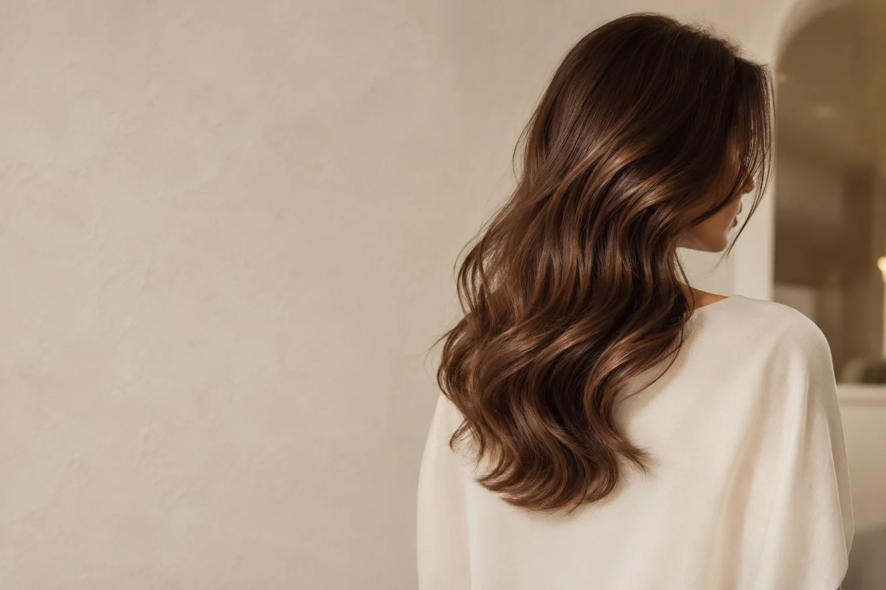
Стрижки · Окрашивание · Уход
Естественные оттенки, продуманная форма и внимание к деталям. Образы, с которыми легко быть собой каждый день.
Выбрать услугу Познакомиться с Maison ÉclatУслуги
Освежить привычный образ или решиться на перемены — начните с того, что важно вам сейчас.
Перейти к выбору услугиФорма с учётом длины, текстуры волос и привычного способа укладки.
60–90 минутВыбрать эту услугуРавномерный оттенок, обновление цвета или работа с глубиной тона.
2–3 часаВыбрать эту услугуМягкие переходы и сочетание оттенков для выразительного, естественного результата.
3–5 часовВыбрать эту услугуСвободные волны, гладкая форма или собранный образ — под ваше настроение и повод.
45–60 минутВыбрать эту услугуСтоимость и время указаны ориентировочно. Они зависят от длины и густоты волос, выбранной техники и состава услуги.
Maison Éclat
Мягкий свет, натуральные фактуры и время, которое можно посвятить себе. Maison Éclat объединяет спокойную атмосферу и внимательный подход к образу.
В основе нашего подхода — разговор о ваших пожеланиях, особенностях волос и повседневном уходе. Чтобы новая стрижка или оттенок вписались в вашу жизнь и радовали за пределами салона.
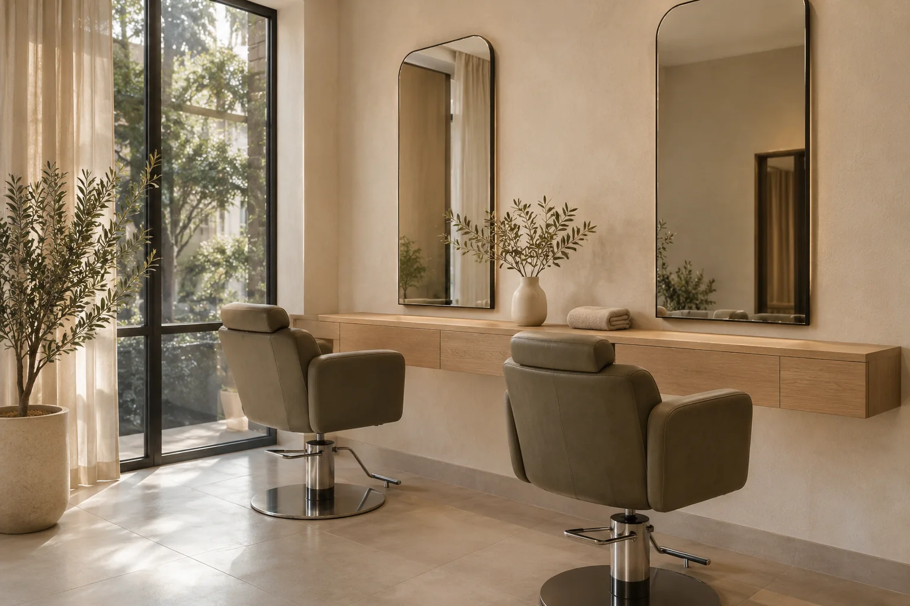
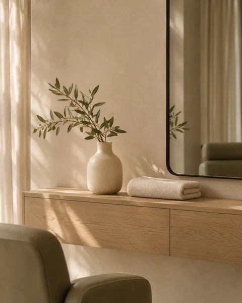
Обсудить ожидания, рассмотреть варианты и понять, что подходит именно вам.
Учитывать естественную текстуру волос и время, которое вы готовы уделять укладке.
Продумать весь образ: от оттенка и линии стрижки до завершающих штрихов.
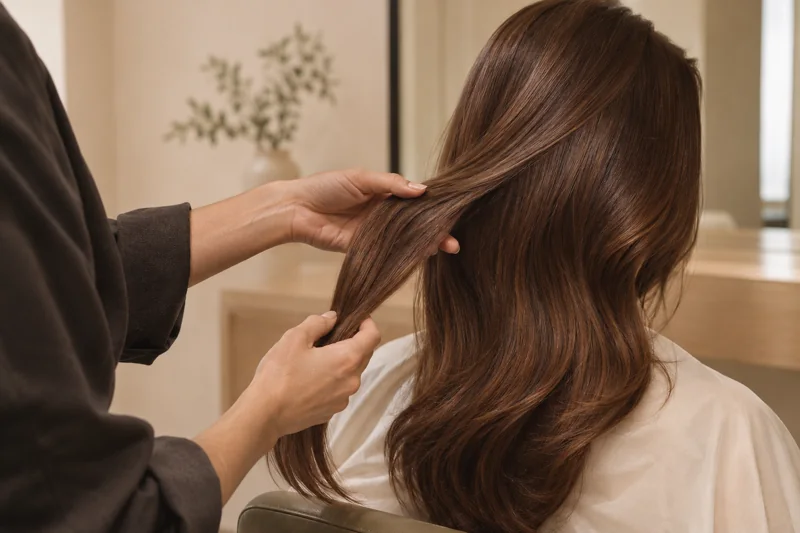
Наш подход
Как волосы лежат без укладки? Что хочется сохранить, а что — изменить? Насколько заметными должны быть перемены?
Такие детали помогают выбрать направление: освежить форму, добавить глубину цвету или попробовать новое сочетание оттенков.
Ваши пожелания — отправная точка.
Вдохновение
Мягкие линии, естественные оттенки и выразительная текстура. Сохраните то, что откликается вам.
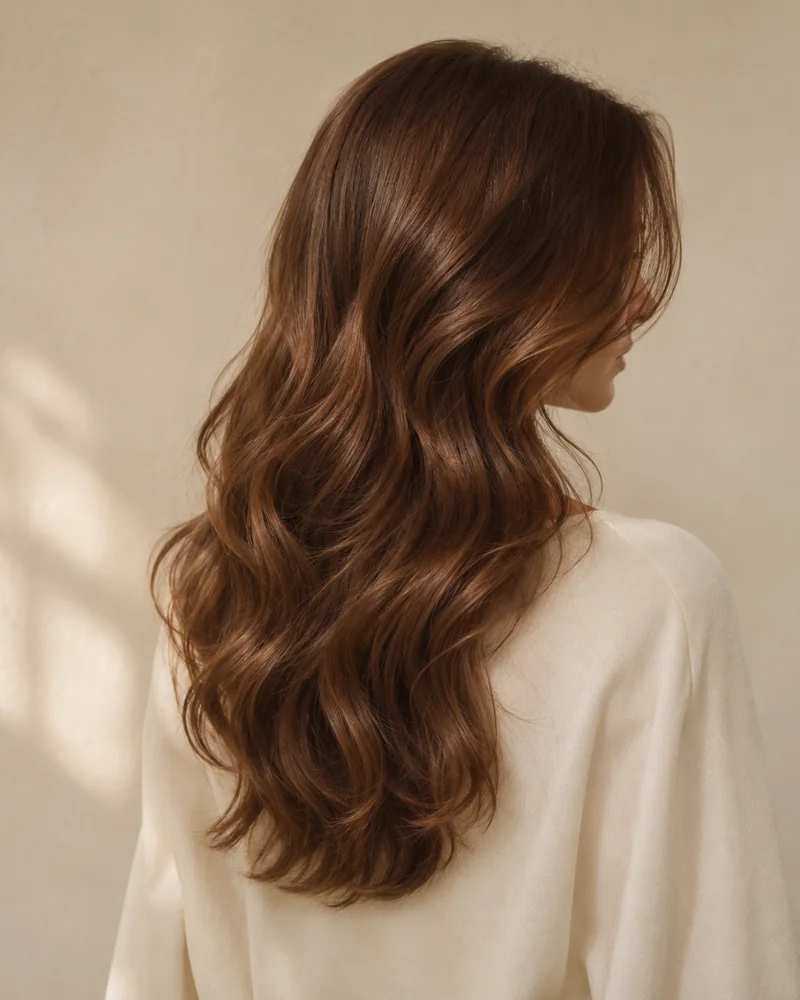
Глубокий оттенок и свободные волны.
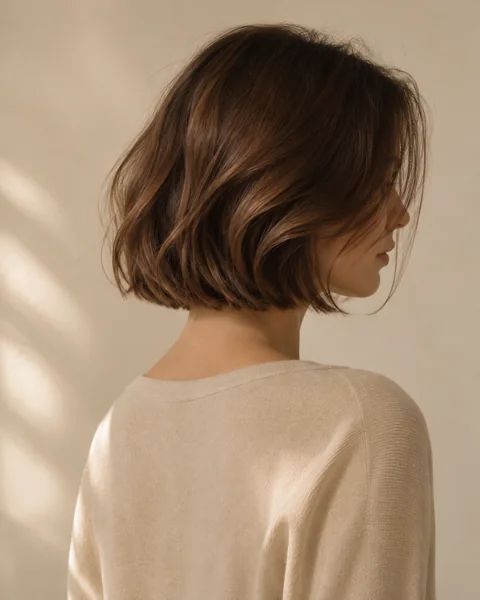
Чёткая форма с естественным движением.
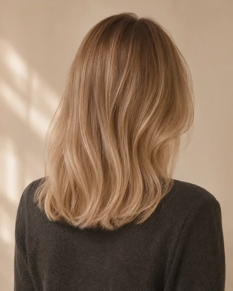
Мягкое сочетание светлых оттенков.
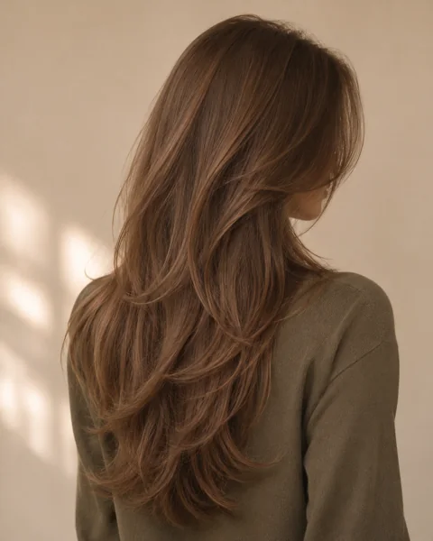
Живая текстура и лёгкость по длине.
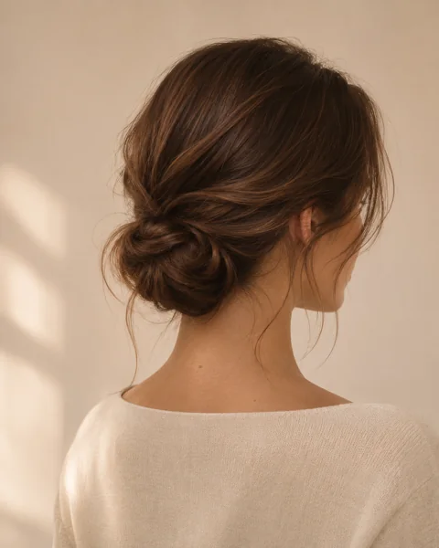
Низкий пучок и свободные пряди.
Визуальные образы созданы с помощью ИИ и служат источником вдохновения.
Команда
Общее внимание к деталям, разные направления работы.
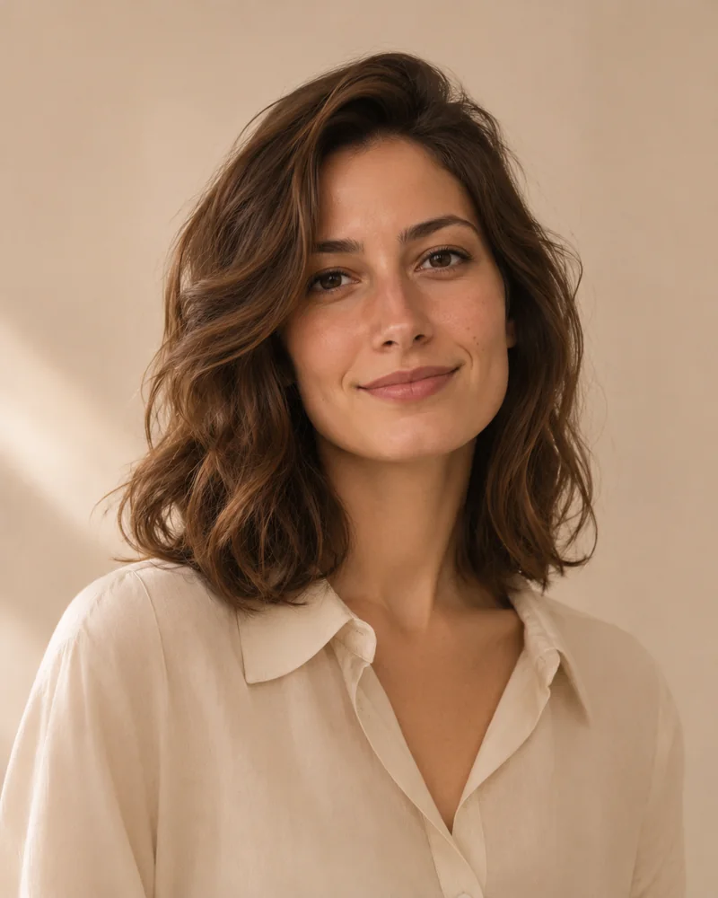
Стрижки и повседневные укладки.
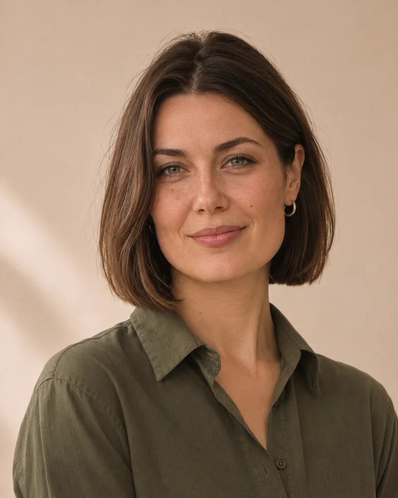
Окрашивание и работа с оттенком.
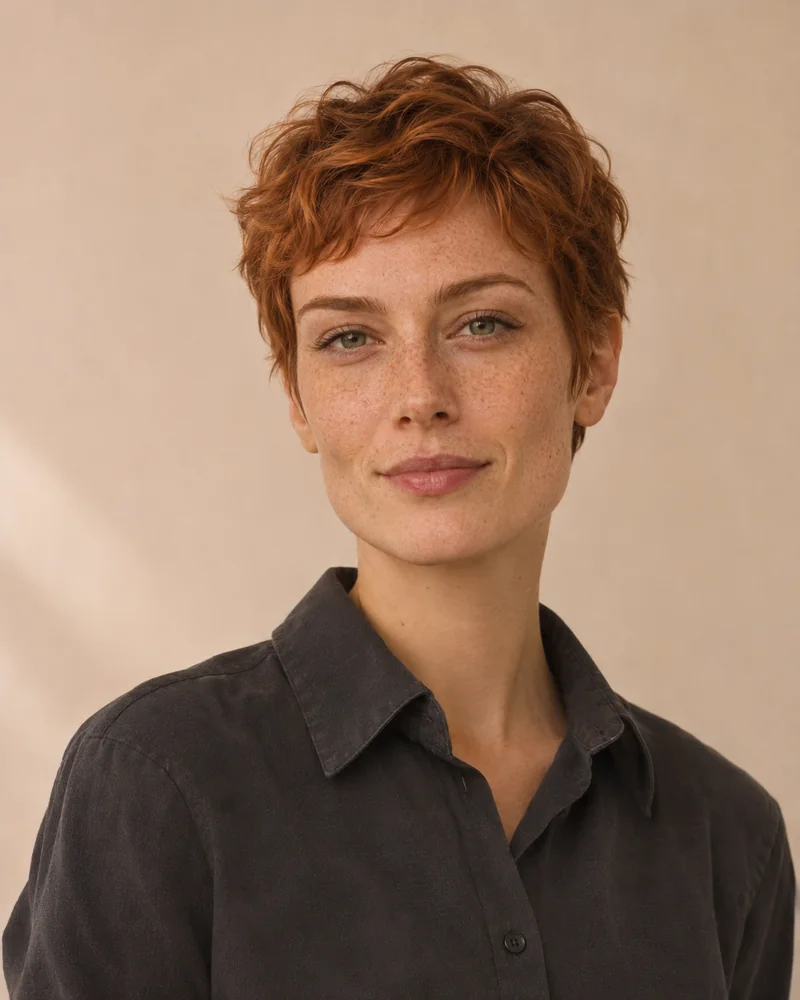
Уход и собранные укладки.
Персонажи вымышлены. Портреты созданы с помощью ИИ.
Полезно знать
Выберите «Нужна консультация». Необязательно заранее разбираться в техниках окрашивания или названиях процедур — можно начать с желаемого образа.
На стоимость влияют длина и густота волос, сложность работы и необходимые материалы. В прайсе приведены ориентировочные значения.
Да. Фотографии помогают показать, какая форма, оттенок или настроение вам нравятся. При выборе решения также важно учитывать исходный цвет, структуру и состояние волос.
Ориентировочная длительность указана рядом с каждой услугой. Для сложного окрашивания стоит предусмотреть больше времени, чем для стрижки или укладки.
Сейчас онлайн-запись недоступна. Ниже можно посмотреть сценарий выбора услуги. Он не бронирует время и не отправляет заявку.
Демонстрация выбора
Выберите услугу, чтобы увидеть её ориентировочную стоимость и длительность.
Онлайн-запись пока недоступна. Этот сценарий позволяет только посмотреть выбор услуги: время не бронируется, заявка не отправляется.
Вы можете вернуться к списку и посмотреть другой вариант. Запись не создана, данные не отправлены.